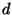
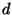

Next: 3.3 Anchor environments
Up: 3. Naming objects in
Previous: 3.1 Motivation
Contents
3.2 Basic rules
CM uses its own ``standard'' syntax for pathnames which for the most
part happens to be the same as the one used by most Unix-like systems:
- Path name components are separated by `` /''.
- Special components `` .'' and `` ..'' denote
current and previous directory, respectively.
- Paths beginning
with `` /'' are considered absolute.
- Other paths are relative unless they start with `` $''.
There is an important third form of standard paths:
anchored paths. Anchored paths always start with `` $''.
Since this standard syntax does not cover system-specific aspects such
as volume names, it is also possible to revert to ``native'' syntax by
enclosing a path name in double-quotes. Of course, description files
that use path names in native syntax are not portable across operating
systems.
- Absolute pathnames
- are resolved in the usual manner
specific to the operating system. However, it is advisable to avoid
absolute pathnames because they are certain to ``break'' if the
corresponding file moves to a different location.
- Relative pathnames that occur in some CM description file
- whose
name is path / file .cm will be resolved relative
to path, i.e., relative to the directory that contains the
description file.
- Relative pathnames that have been entered interactively,
- usually as an argument to one of CM's interface functions, will be
resolved in the OS-specific manner, i.e., relative to the current
working directory. However, notice that some of CM's operations (see
section 4.2--autoload) will be executed lazily and,
thus, can occur interleaved with arbitary other operations--including
changes of the working directory. This is handled by CM in such a way
that it appears as if all path derived from an interactive relative
path had been completely resolved at the time was entered. As
a result, two names specified using identical strings but at different
times when different working directories were in effect will be kept
apart and continue to refer to their respective original file system
locations.
- Anchored paths
- consist of an anchor name (of non-zero length)
and a non-empty list of additional arcs. The name is enclosed by
the path's leading $ on the left and the path's first /
on the right. The list of arcs follows the first /. As with
all standard paths, the arcs themselves are also separated by /.
An error is signalled if the anchor name is not known to CM.
If
 is a know anchor name currently bound to some directory name
, then the standard path $ / (where is a list
of arcs) refers to /. The frequently occuring case where
coincides with the first arc of can be abbreviated as
$/.
is a know anchor name currently bound to some directory name
, then the standard path $ / (where is a list
of arcs) refers to /. The frequently occuring case where
coincides with the first arc of can be abbreviated as
$/.
Next: 3.3 Anchor environments
Up: 3. Naming objects in
Previous: 3.1 Motivation
Contents
Matthias Blume
2001-07-19